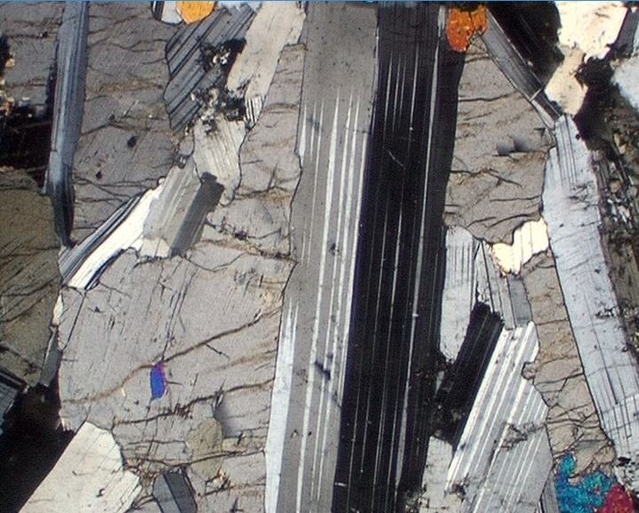
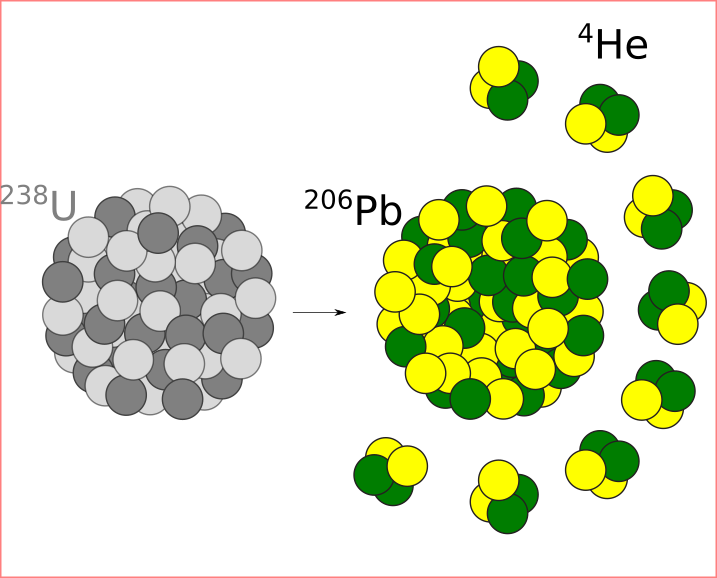

|  | An interactive introduction to rock and mineral identification in hand specimen and thin section, using a virtual petrographic microscope with embedded YouTube videos. |
|  | Introduction to Geochronology. Covers the basic principles of radioactive decay, mass spectrometry and isotope dilution before discussing the most common geochronometers in use today, including radiocarbon, Rb-Sr, Sm-Nd, U-Pb, Pb-Pb, K-Ar, Ar-Ar, U-Th-He, fission tracks, cosmogenic nuclides and U-series. Practical exercises accompany the theoretical introduction, including five Matlab sessions in which simplified yet realistic datasets are processed. |